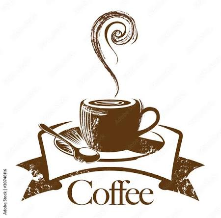

Apresentação breve
Somos da Aurora Café e aqui nós preparamos os mais deliciosos cafés da região, caso queira ter certeza venha até nós e tire as conclusões.

Principais destaques
- Cafés artesanais - Trabalhamos com grãos selecionados de produtores brasileiros
- Produtores locais - valorizamos pequenos produtores e fornecedores da região.
- Produtos artesanais - doces e outros produtos preparados com cuidado.
- Ambiente acolhedor - espaço pensado para quem quer tomar um café com tranquilidade.